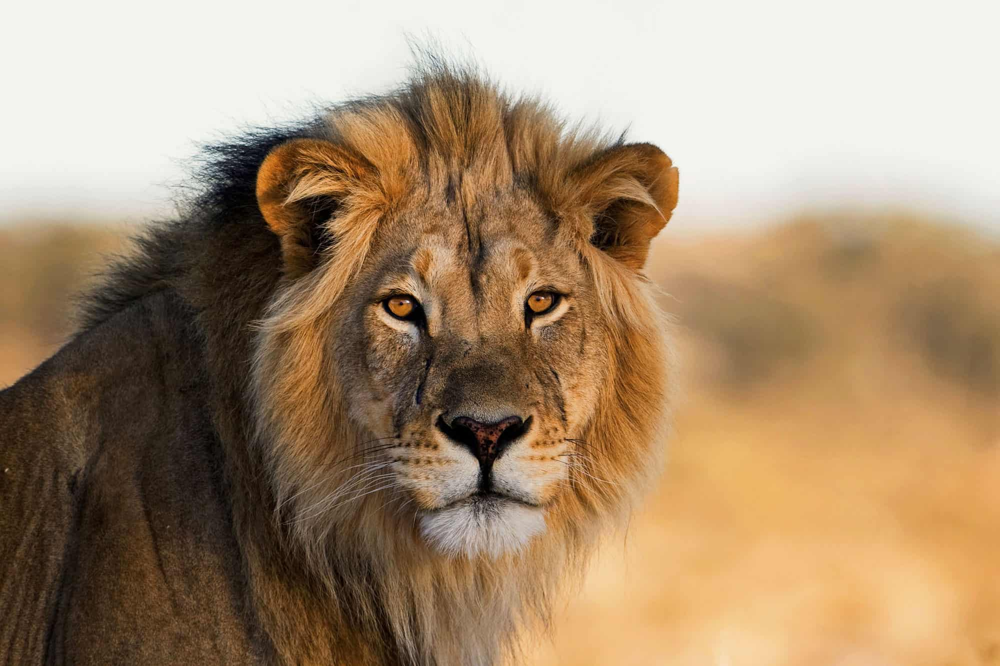
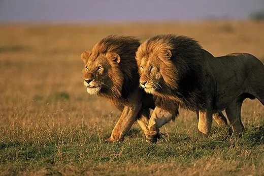

Lions are the largest members of the cat family and are one of the most iconic animals in the world. They are found in Africa and Asia, and live in prides, which are groups of related females and their cubs. Males live separately from the prides and only join them to mate.
Lions are apex predators, which means that they are at the top of the food chain. Their diet consists mainly of large mammals such as zebras, wildebeest, and antelope. Lions are social animals and work together to hunt and raise their young.
Here are some interesting facts about lions:
Lions are an important part of the African and Asian ecosystems. They help to control populations of prey animals and keep the ecosystem healthy. However, lions are facing many threats, including habitat loss, poaching, and disease. It is important to protect lions so that they can continue to thrive in the wild.
If you would like to learn more about lions, there are many resources available online and in libraries. You can also visit a zoo or wildlife sanctuary to see lions up close.